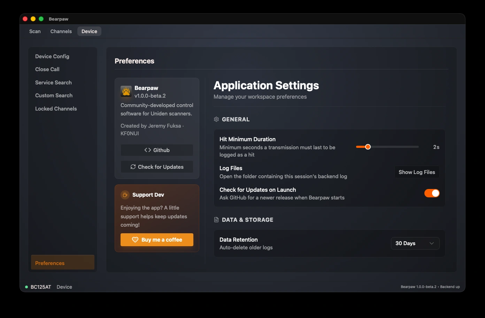

Preferences
These settings live in the app on your computer, not the scanner. Unlike the other Device pages, nothing here is written to the radio.

- Hit Minimum Duration: 0.5 to 10 seconds. The shortest a transmission must last for the app to record it as a hit in your activity log. Raise it to filter out brief static bursts; lower it to catch quick exchanges. It's an app-side logging filter, separate from how the scanner behaves.
- Show Log Files: opens the folder holding this session's backend log on your computer. Useful when troubleshooting a connection problem, or when attaching a log to a bug report.
- Data Retention: 30 Days, 90 Days, or 1 Year. How long the app keeps its own activity and analytics logs before automatically deleting the old ones.
- Check for Updates on Launch: on or off. Asks GitHub once at startup whether a newer release exists, and shows a notification if one does. Turn it off and Bearpaw never contacts the network on its own — you can still check any time from Help → Check for Updates.
-
Re-read Channels on Connect: on or off, on by
default. Reads your channel memory from the scanner every time
Bearpaw connects, which takes about five seconds and shows a
progress panel.
Turn it off and your channels appear instantly from the copy Bearpaw saved last time, with no wait and no panel.
Which you want depends on how you program your scanner. If you ever use the radio's own keypad, leave this on: the scanner has no way to tell Bearpaw that something changed, so a saved copy goes quietly out of date and the app has no way to know. If you only ever program from the computer, the saved copy is always right and you may as well have the instant start.
Either way you can re-read at any time from Scanner → Sync Memory, or with the Refresh button on the Channels tab, which also shows how old the current list is.
Bearpaw doesn't update itself. The notification's Download button opens the release page in your browser, and you install the new version the same way you installed this one. If you're offline, the startup check fails silently — no error, no delay, nothing to dismiss.
The page also has an About card — the app version, a link to the project on GitHub, and a Check for Updates button that runs the same check as the Help menu and always tells you the result, even when you're already up to date. Below it, a Buy me a coffee link to support the developer.